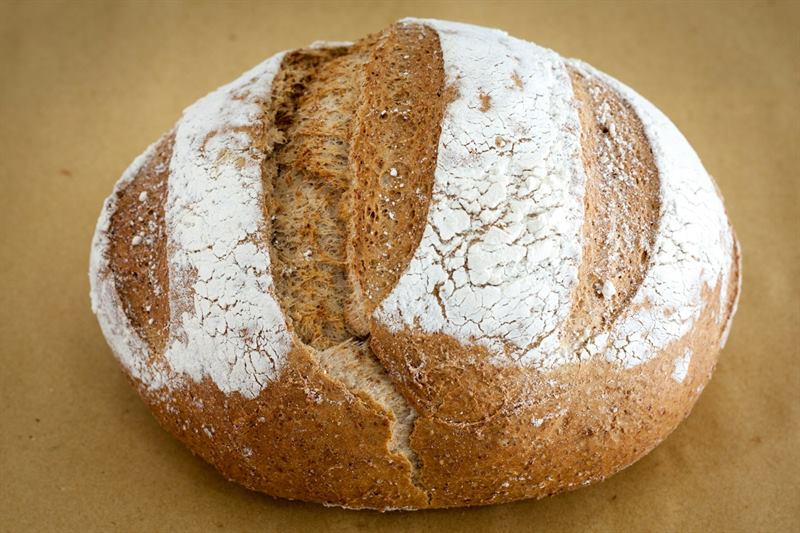
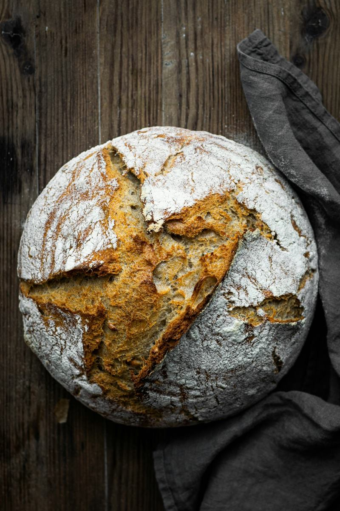
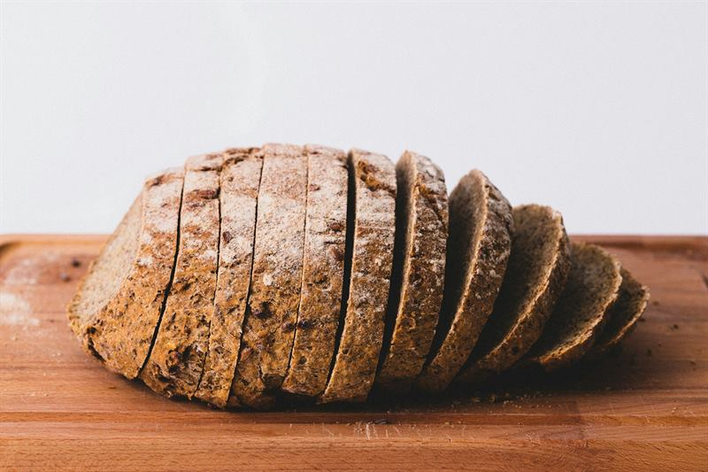
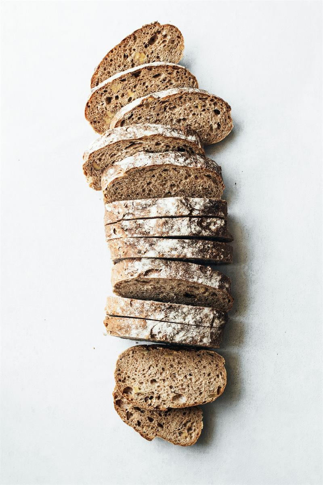
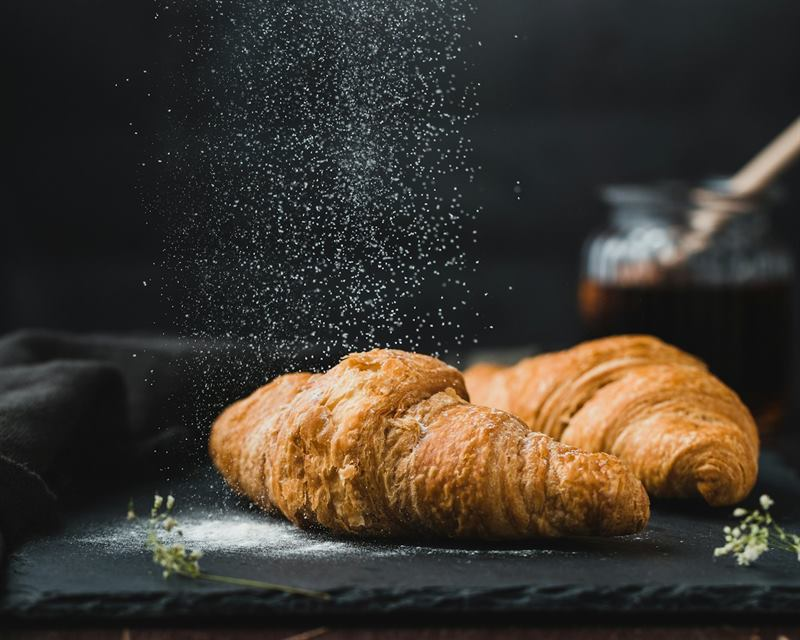
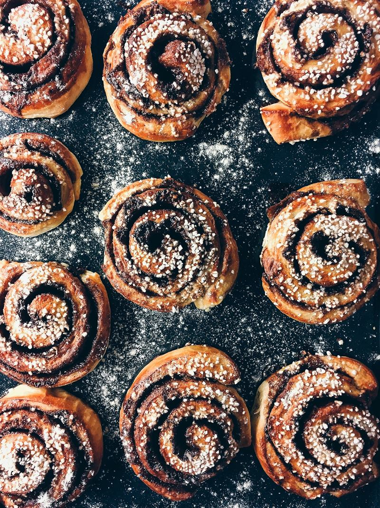
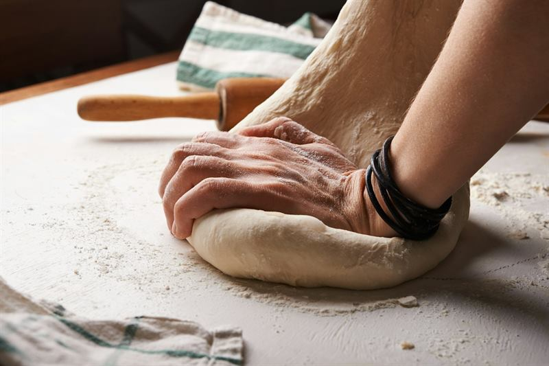
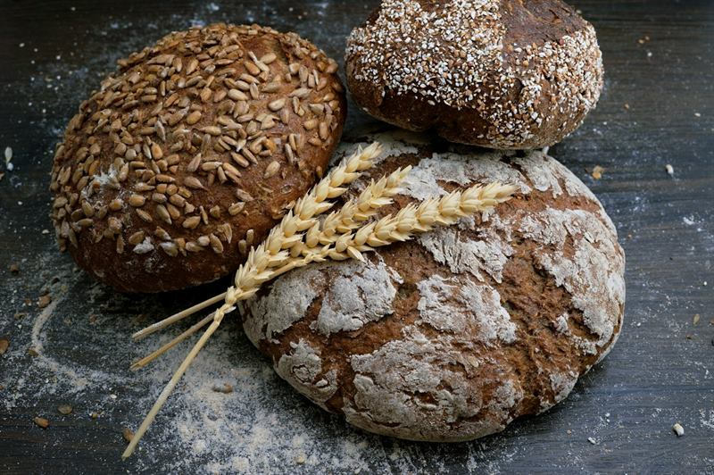
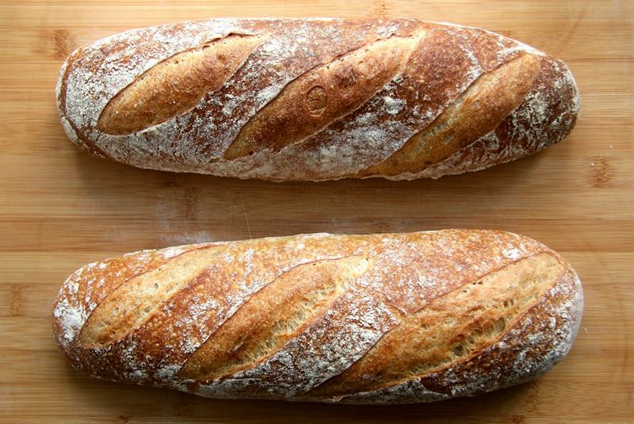

01Panes de masa madre
Fermentación lenta, corteza dorada que cruje al cortarla y una miga húmeda y abierta, con ese sabor apenas ácido que sólo da el tiempo.
Consultar disponibilidad de panes de masa madrePanes de masa madre, ingredientes naturales y el sabor de lo artesanal, horneados en el corazón de Miramar.


Masa madre, ingredientes naturales, panificados integrales, pastelería artesanal, horneado en Miramar.
Cada horneada es distinta: lo que sale del horno depende del día, de la estación y del tiempo que pide cada masa. Estas son las familias de productos que hacen a Fragonia.

01Fermentación lenta, corteza dorada que cruje al cortarla y una miga húmeda y abierta, con ese sabor apenas ácido que sólo da el tiempo.
Consultar disponibilidad de panes de masa madre
02Harinas integrales, sabor profundo y textura con carácter. Para el desayuno de todos los días o para acompañar la mesa.
Consultar disponibilidad de panificados integrales
03Dulces horneados con la misma paciencia que el pan: masas cuidadas, aromas cálidos y recetas hechas a mano.
Consultar disponibilidad de pastelería artesanal
04Lo que cambia con el calendario. Recetas que aparecen por unas semanas y se van: preguntá qué está saliendo del horno.
Consultar disponibilidad de especialidades de temporadaLa producción es artesanal y por tandas: consultá variedades y disponibilidad antes de tu pedido.


Fragonia es una panadería y pastelería integral artesanal de Miramar, a cargo de Silvana Oliva. Un emprendimiento independiente que elige el camino largo: masa madre, ingredientes naturales y trabajo a mano.
Sin conservantes ni aditivos. Cada pan respeta su tiempo de fermentación, de reposo y de horno. No hay atajos: hay oficio, paciencia y amor en cada corte.
El sabor auténtico lleva su tiempo.

Un fermento vivo de harina y agua, alimentado con constancia. Trabaja despacio y le da al pan aroma, estructura y una corteza inconfundible.
Harina, agua, sal y masa madre como punto de partida. Ingredientes nobles y reconocibles, sin conservantes ni aditivos.
Amasado, formado y horneado a mano, en tandas pequeñas. Cada pieza sale un poco distinta, y eso también es parte de su encanto.
Miramar, Buenos Aires · Argentina
Horarios informados por el emprendimiento. Pueden variar: te recomendamos consultar antes de acercarte.
Fotografías ilustrativas: la galería está preparada para mostrar las publicaciones reales de Fragonia.
Escribinos, contanos qué tenés ganas de probar y te decimos qué sale del horno. Así de simple.
Consultar por WhatsApp¿Preferís Instagram? Escribinos por mensaje directo.